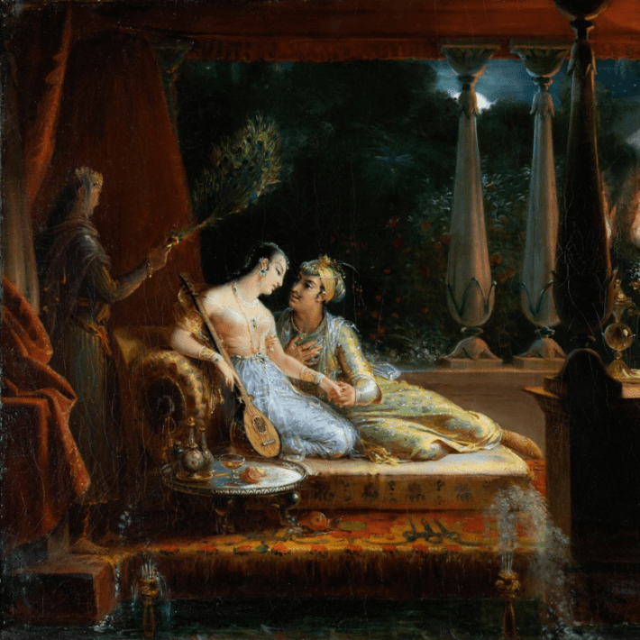

I loved literature before I loved medicine, and as a medical student, I often found that my textbooks left me cold, their medical jargon somehow missing the point of profound diseases able to rewrite a person’s life and identity. I was born, I decided, a century too late: I found the stories I craved, not in contemporary textbooks, but in outdated case reports, 18th- and 19-century descriptions of how the diseases I was studying might shape the life of a single patient.
These reports were alive with vivid details: how someone’s vision loss affected their golf game or their smoking habit, their work or their love life. They were all tragedies: Each ended with an autopsy, a patient’s brain dissected to discover where, exactly, the problem lay, to inch closer to an understanding of the geography of the soul. To write these case studies, neurologists awaited the deaths and brains of living patients, robbing their subjects of the ability to choose what would become of their own bodies—the ability to write the endings of their own stories—after they had already been sapped of agency by their illnesses.
Among these case reports was one from a forbidding state hospital in the north of Moscow: the story of a 19th-century Russian journalist referred to simply as “a learned man.” The journalist suffered a type of alcoholic dementia because of the brandy he often drank to cure his writer’s block and he developed a profound amnesia. He could not remember where he was or why. He could win a game of checkers but would forget that he had even played the minute the game ended. In the place of these lost memories, the journalist’s imagination spun elaborate narratives; he believed he had written an article when in fact he had barely begun to conceive it before he became sick, would describe the prior day’s visit to a far-off place when in actuality he had been too weak to get out of bed, and maintained that some of his possessions—kept in a hospital safe—had been taken from him as part of an elaborate heist.
Sacks’ journals suggest he injected his own experiences into the stories of his patients.
In the years since I first read about the journalist, I have become a neurologist, well versed in the medical jargon that describes symptoms like his: confabulation, a gap in memory filled with a story that feels entirely true to the person telling it. Confabulations can be fantastical or banal, grounded in memory or imagination, but confabulations share one essential feature: Confabulators experience their own stories as the truth. A confabulation is not a conscious lie, but rather an unconscious repair.
Neurologist Oliver Sacks, who died in 2015, was perhaps the most prolific chronicler of symptoms like confabulation, filling the pages of his books with detailed descriptions of his own patients’ wounds and blindnesses. I first read Sacks as a college student studying cognitive science and again as a neurology resident steeped in the strangeness and wonder of wounded brains. In his foreword to Awakenings, the stories of patients who had survived the “sleeping sickness” epidemic of the 1920s, alive but lethargic and permanently immobilized, Sacks wrote that the book was possible in large part because of the Bronx hospital where he practiced, which he called “a chronic hospital, an asylum,” where his patients resided for decades.
Sacks bore witness to “situations virtually unknown, almost unimaginable, to the general public and, indeed, to many of my colleagues.” Years after I first read Awakenings, I wrote my own book, The Mind Electric, informed in part by my own experiences at a city safety-net hospital in Boston, where I now practice neurology. I admired Sacks because he found inspiration in places others had not thought to look, because he centered stories from the margins that had previously gone untold. I wanted to do the same.

STORIES KEEP US ALIVE: “I loved The Arabian Nights as a child because it felt fantastical,” writes author and neurologist Pria Anand. “From Scheherazade, I learned that stories keep us alive.” Credit: Mutualart / Wikimedia Commons.
Among the chapters of Sacks’ 1985 The Man Who Mistook His Wife for a Hat, acollection of medical tales, is a case study titled “A Matter of Identity.” It’s the story of William Thompson, an ex-grocer struggling with a form of dementia born of longstanding alcoholism. Thompson, Sacks wrote, could not remember that he lived in a hospital. When Sacks visited him in a white doctor’s coat, Thompson imagined that he was a customer at his deli, then a kosher butcher, then an old gambling buddy, and then a Mobil station mechanic. Thompson, Sacks wrote, suffered a sort of “narrative frenzy … He must seek meaning, make meaning, in a desperate way, continually inventing, throwing bridges of meaning over abysses of meaninglessness, the chaos that yawns continually beneath him.”
In a New Yorker article published last month, journalist Rachel Aviv dissects Sacks’ own desperate quest for meaning, reporting on unpublished journals suggesting that Sacks invented patient narratives, sometimes injecting parts of his own experiences into the stories of his patients. In Awakenings, Sacks wrote that his patient, Leonard, likened his frozen body to a caged panther in a Rainer Maria Rilke poem. In fact, Sacks’ letters and notes suggest, it was Sacks, not Leonard, who identified with the poem, writing to a friend that the experience of writing his first book, Migraine, made him feel like “Rilke’s image of the caged panther, stupefied, dying, behind bars.” In a chapter of The Man Who Mistook His Wife for a Hat, Sacks wrote about a woman he called Rebecca, who blossomed despite her cognitive limitations after the death of her grandmother. In the book, Sacks reported that she joined a theater group and emerged from her grief as “a complete person.” Sacks’ journals, filled with transcriptions of his conversations with Rebecca, suggest that the reality was messier: Rebecca never joined a theater group but rather succumbed to her grief, telling Sacks that she wished she’d never been born.
What emerges from Aviv’s deeply reported work is not conscious deception, but the gravitational pull of confabulation, a tidy narrative mistaken for truth. Aviv quotes a letter Sacks wrote to his brother, Marcus, enclosed with a copy of The Man Who Mistook His Wife for a Hat. In the letter, Sacks calls the book a collection of “fairy tales,” explaining “these odd Narratives—half-report, half-imagined, half-science, half-fable, but with a fidelity of their own—are what I do, basically, to keep MY demons of boredom and loneliness and despair away.” In fact, Sacks writes, Marcus would likely call them “confabulations.”
Science has a long tradition of using neurological wounds like confabulation as windows, opportunities to catch a glimpse of the complex ways our brains work when they are whole. We understand something about the biological basis of communication from studying people bereft of language, about the underpinnings of human perception from studying people who have experienced blindness, and about the neural pathways that generate movement from studying people suffering paralysis. Even the most esoteric-seeming neurological injuries speak to universal features of our brains.
For patients like Thompson and the 19th-century Russian journalist with amnesia, confabulation bridges a discontinuity, stepping in when memory fails. For Sacks, deeply closeted until his 80s, Aviv suggests confabulation served a different, more poignant purpose: His stories offered a place to put those parts of his own identity that he had been forced to sublimate. In his journals, Sacks wrote that he gave the patients in his books “some of my own powers, and some of my phantasies too.” He gave his patients his own inner monologues, his own desires, projections of his own insecurities. “I write out symbolic versions of myself,” he wrote.
As a doctor, I, too, traffic in stories, hunger for coherence rather than chaos.
I have always loved Sacks best when he wrote, not about his patients’ symptoms, but his own. His early experiments with psychotropics are catalogued in Hallucinations, the symptoms of his own visual auras in Migraine, and his alienation from his own body in A Leg to Stand On, the story of how he tore his quadriceps while mountain-climbing in Norway and found himself unable to move the leg, even after a surgery to repair muscle. Sacks describes the leg as “foreign,” a part of himself that he cannot relate to.
Four years before Sacks died, he wrote about his own body in The Mind’s Eye, meditating on the eye cancer that would eventually kill him alongside the stories of other artists and scientists who found themselves unable, in some essential way, to see. In a deeply personal chapter titled “Face-Blind,” Sacks revealed his own blindness: prosopagnosia, the inability to recognize even the most intimately familiar faces. Sacks remembered failing to recognize his own therapist five minutes after leaving an appointment and birthday parties at which he asked friends to wear name tags. Sometimes, he wrote, he apologized to his own reflection in the mirror, unable to recognize even himself. Still, he was oblivious to his prosopagnosia until late in his life, when he visited his brother in Australia for the first time in decades and recognized his own deficiency in his brother’s face-blindness.
For all Sacks knew about the ways that brains are able to hide their wounds, he had failed to acknowledge his own.
The genius of Sacks was that he insisted on centering people rather than illnesses, stories rather than jargon. His patients find ways to repair their reality rather than succumbing to their illnesses. As an epigraph to The Man Who Mistook His Wife for a Hat, Sacks chose to focus not on science, but rather fables: “To talk of diseases is a sort of Arabian Nights entertainment.” The quote is attributed to William Osler, the 19th-century internist who founded the hospital where I would train a century later.
I loved The Arabian Nights as a child because it felt fantastical. I read of caliphs and sorcerers, of jinn born of fire and of seas peopled with merfolk. The Arabian Nights is a strange, protean text, a shapeshifting, Russian-doll narrative of stories nested within stories to which tales have been added, subtracted, mutated over centuries and continents. The fables themselves are framed by the story of Scheherazade, the latest bride of a monstrous king who weds a new woman each night only to have her beheaded the following dawn. The night of their wedding, the resourceful and brilliant Scheherazade begs to be allowed to say goodbye to her beloved younger sister, Dunyazad, for whom she begins to weave a marvelous bedtime story while the king lies awake and listens. When dawn breaks, the tale remains unfinished, and the king, anxious for a resolution, spares Scheherazade’s life for one more night. The next night, and the next night, and the next, Scheherazade spins a web of endless stories that enthrall the king, always ending on a cliff-hanger so that he will keep her alive. From Scheherazade, I learned that stories keep us alive. But stories can also mislead.
When I was a medical student, reading the old case reports, I wondered whether writers were particularly prone to confabulation, primed to search for a coherent plot. Since becoming a physician, I have wondered even more whether doctors are particularly prone to confabulation. Medical students are taught to imagine a binary: doctor and patient, science and faith, objective truth and subjective report, us and them. Our morning rounds are an exercise in telling and retelling patients’ stories in a way that explains their illnesses, cloaked in the sense of objectivity offered by a white coat. But the stories told on these rounds are just as prone to false truths as the reports of an amnesia patient, subconsciously shaped by our priors, our communities, our own narratives. On rounds, a woman’s pain might be recast as anxiety, for instance, while a vitamin deficiency born of alcohol use might be regarded as a deserved punishment.
As a doctor, I, too, traffic in stories, hunger for coherence rather than the chaos and uncertainty that medicine and bodies often offer. In medicine, we arbitrate which stories are important and which don’t matter, which are true and which are false, as if we were omniscient rather than subjective beings, as if our training somehow excises the humanity, the personal, from our practice. In my own writing as in my medical practice, I remind myself to always leave room for uncertainty, for that which I cannot possibly know about someone else’s body, about their story.
I loved Sacks for his unflinching desire to bear witness to the complexity of illness, and it pained me to read that he sometimes put his own story ahead of his patients’ realities. Hospitals are places of both ruin and miracles, heartache and wonder, the narratives they contain as spellbinding as they are messy. Sacks knew this better than any writer. And so, for all that feels profoundly, universally human about his vulnerabilities, I struggle to understand his impulse to confabulate on the page when the unvarnished truth would have been more compelling.
But Aviv’s article also left me with an unsettling revelation that transcends Sacks’ writing: not simply that Sacks revised reality, but that we all do. Confabulation is powerful precisely because it slips beneath consciousness, beneath the attention of even the keenest observers. Surrounded by a chaotic world, deluged with sights, sounds, and sensations, our brains instinctively search for narrative order, telling stories to explain away that which we cannot understand and that which we fear. All of us narrate our way through gaps, often mistaking the satisfaction of a tidy story for the truth. For all his flaws, perhaps despite himself, Sacks continues to illuminate the frailties of the human condition. 
Lead image: Torley / Flickr